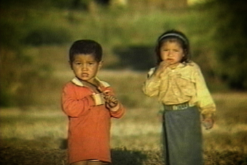
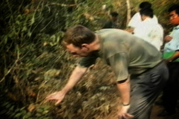
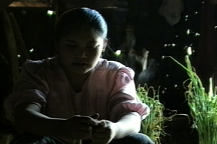
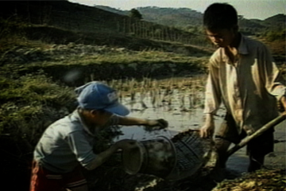

Deadly Consequences
Dangers lurk around every activity. A farmer describes his heartache after losing his son in an accident.
Play 2:30

Hidden Dangers
Munitions hidden under brush can look like fruits or toys. Locals and demining experts to ensure safe removal of the UXOs.
Play 2:30

A Child’s Burden
Chantaly relives her tragic accident and laments about how it impacted her family. A burden to her family because of the disability.
Play 2:30

Casualties
(Warning: Explicit Images) Human suffering and death by accidents from exploded ordinances.
Play 2:30